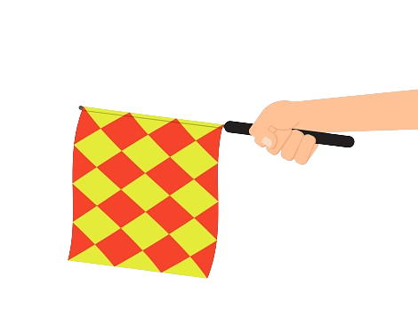

REGLAS DEL JUEGO
- Los partidos de fútbol se dividen en dos tiempos, cada uno de 45 minutos, con un descanso de 15.
- El árbitro lanza una moneda para decidir el lado de la cancha jugarán.
- El balón está dentro del juego mientras no haya falta. La pelota está fuera de cancha si cruza la meta o la línea de banda.
- Se marcará gol cuando el balón pasa la línea de meta y entra al arco, siempre y cuando no haya falta.
- Se considera fuera de juego (offside) si un jugador le da pase a su compañero y éste está más cerca a la línea de meta opuesta en comparación al balón y al último adversario. En este caso, el árbitro otorgará al rival un tiro libre indirecto (pase a otro jugador).

- Tocar el balón; saltar sobre el adversario, empujarlo, golpearlo, sujetarlo, patearlo o escupirlo; son consideradas faltas y son cobradas con tiro libre a favor del equipo afectado.
- El árbitro muestra tarjeta amarilla para amonestar a un jugador (por infringir el reglamento) y una tarjeta roja para expulsarlo (por conducta violenta contra el adversario o impedir un gol con la mano).
- El tiro libre reanuda el juego después de una falta. Existen dos tipos:
Tiro libre directo: lanzamiento directo a la portería del equipo contrario.
Tiro libre indirecto: un pase a otro jugador.
- Los penales se marcan cuando un jugador comete una infracción dentro del área que defiende y se cobra en favor del equipo contrario.
- Los saques reanudan el juego desde distintas partes de la cancha, por ello existen tres, con los nombres de donde se realiza:
saque de banda
saque de meta
saque de esquina
|